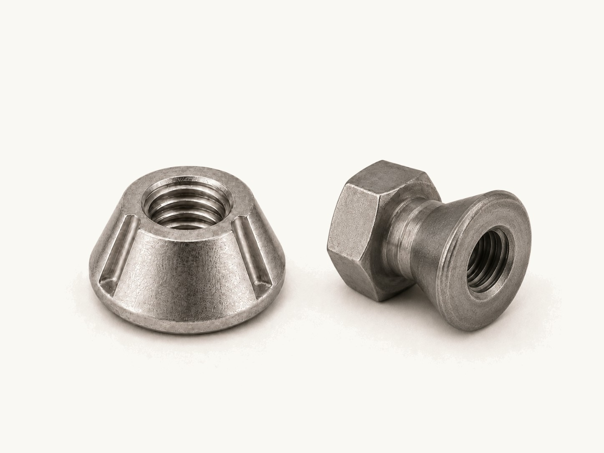

Tamper-Resistant Security Nuts
Choose Tri-Groove nuts for authorized removal with a matching socket, or break-away nuts where routine removal is not expected. Compare catalog-listed threads, materials, and tool sizes below.

Sizes & part numbers
Select a part number to start a quote. Catalog listings are reference configurations; availability is confirmed with your inquiry.
Tri-Groove nuts - Zamak 5 zinc alloy (10)
| Part number | Thread size | Socket |
|---|---|---|
| ZTRN10C | 10-24 | TRS20 |
| ZTRN10F | 10-32 | TRS20 |
| ZTRN14C | 1/4-20 | TRS20 |
| ZTRN31C | 5/16-18 | TRS30 |
| ZTRN37C | 3/8-16 | TRS30 |
| ZTRN50C | 1/2-13 | TRS40 |
| ZTRN62C | 5/8-11 | TRS40 |
| ZTRNM6C | M6 x 1.0 | |
| ZTRNM8C | M8 x 1.25 | TRS30 |
| ZTRNM10C | M10 x 1.50 | TRS40 |
Source: Screw & Supply catalog, page 31. Confirm current availability and exact configuration when ordering.
Tri-Groove nuts - 316 stainless steel (4)
| Part number | Thread size | Socket |
|---|---|---|
| SSTRN25C | 1/4-20 | TRS20 |
| SSTRN31C | 5/16-18 | TRS30 |
| SSTRN37C | 3/8-16 | TRS30 |
| SSTRN50C | 1/2-13 | TRS40 |
Source: Screw & Supply catalog, page 31. Confirm current availability and exact configuration when ordering.
Break-away nuts - Zamak 5 zinc alloy (10)
| Part number | Thread size | Drive size |
|---|---|---|
| ZNB10C | 10-24 | 7/16" |
| ZNB14C | 1/4-20 | 9/16" |
| ZNB31C | 5/16-18 | 5/8" |
| ZNB37C | 3/8-16 | 3/4" |
| ZNB50C | 1/2-13 | 1" |
| ZNB62C | 5/8-11 | 1-1/8" |
| ZNBM6C | M6 x 1.0 | 9/16" |
| ZNBM8C | M8 x 1.25 | 5/8" |
| ZNBM10C | M10 x 1.5 | 3/4" |
| ZNBM12C | M12 x 1.75 | 1" |
Source: Screw & Supply catalog, page 31. Confirm current availability and exact configuration when ordering.
Break-away nuts - 304 stainless steel (5)
| Part number | Thread size | Drive size |
|---|---|---|
| SSNB25C | 1/4-20 | 9/16" |
| SSNB31C | 5/16-18 | 5/8" |
| SSNB37C | 3/8-16 | 3/4" |
| SSNB50C | 1/2-13 | 1" |
| SSNB62C | 5/8-11 | 1-1/8" |
Source: Screw & Supply catalog, page 31. Confirm current availability and exact configuration when ordering.
Confirm M6 Tri-Groove nut socket compatibility with your inquiry.
Common questions
- What is the difference between Tri-Groove and break-away nuts?
- Tri-Groove nuts use a matching socket for installation and authorized removal. A break-away nut sheds its installation section during tightening, leaving a security profile not intended for routine removal.
- Which socket fits a Tri-Groove nut?
- Use the part-specific socket column and confirm the nut series. For M6 Tri-Groove nuts, contact us to confirm socket compatibility before ordering.
- How are break-away nuts installed?
- A compatible wrench or socket turns the installation section. The drive-size column identifies that tool size; confirm application-specific installation requirements before use.
- Which materials are listed?
- The tables separate Zamak 5 zinc alloy, 316 stainless Tri-Groove nuts, and 304 stainless break-away nuts. Each material has its own listed thread range.
- Can you review custom sizes or materials?
- Yes. Send a drawing or sample information with the thread, length, head style, material, finish, quantity, and any documentation requirements. We offer custom-manufactured fasteners with competitive minimum order quantities.
Where security nuts protect the joint
- Utility & Infrastructure →
Secures guardrail, fencing, and outdoor utility fixtures.
- Transit, Rail & Signage →
Holds transit hardware and signage exposed to public contact.
- Detention & Institutional →
Used on institutional fixtures requiring controlled access.
- Machinery Guarding & Panels →
Secures guards and equipment panels against casual removal.
- Amusement & Fitness Equipment →
Used on public-use equipment where tampering is a concern.
- Public Restrooms & Partitions →
Secures restroom fixtures and partitions in public spaces.